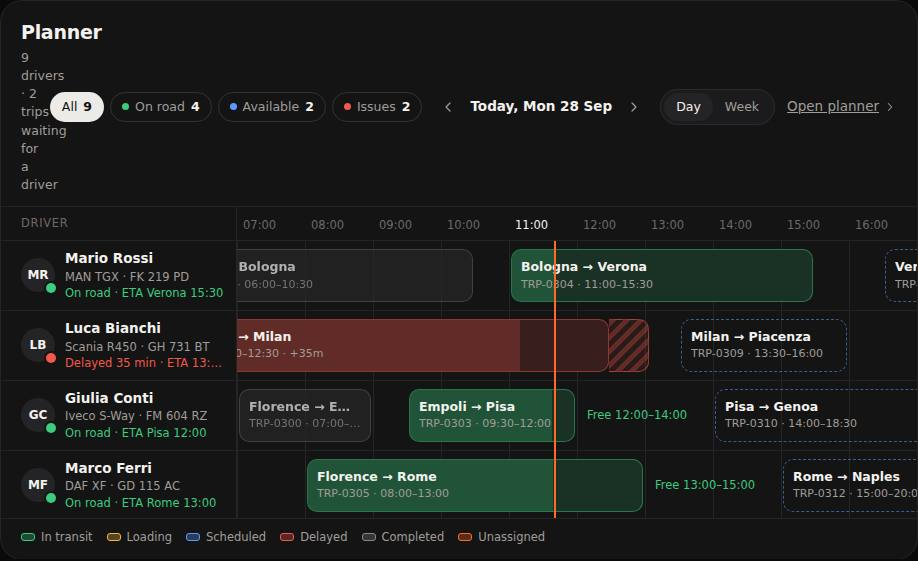
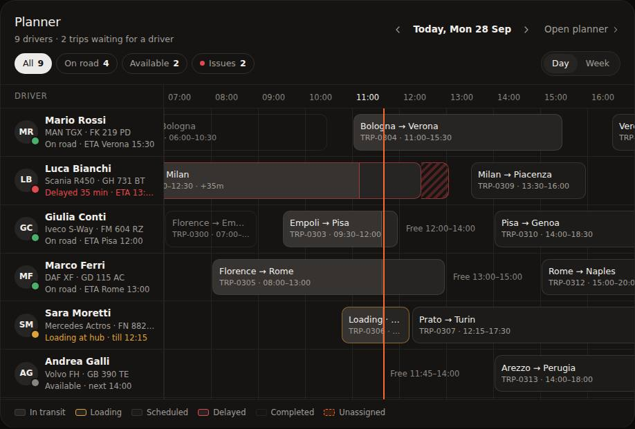
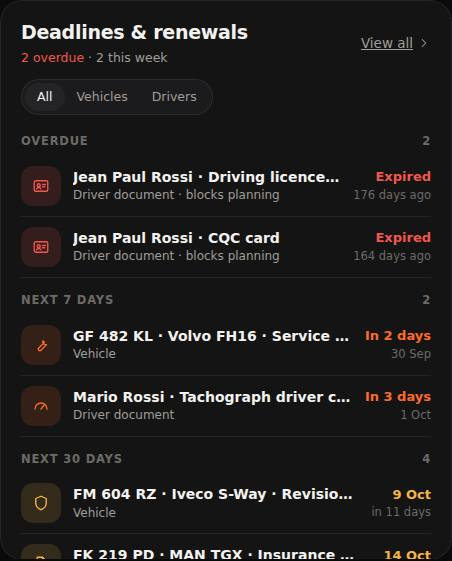
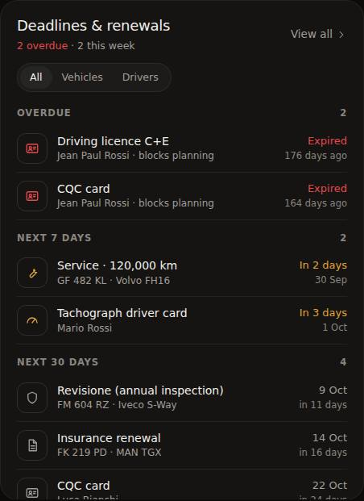
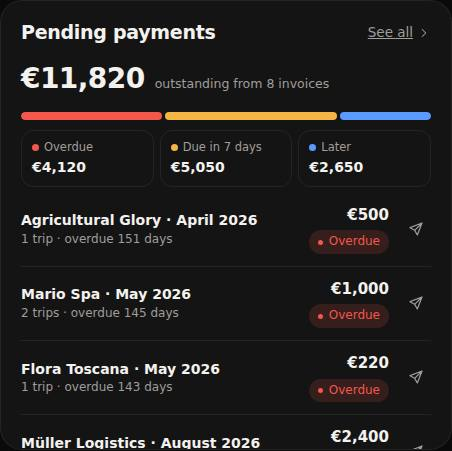
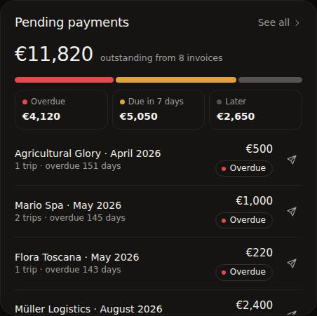
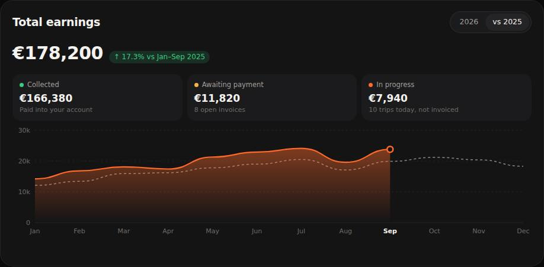
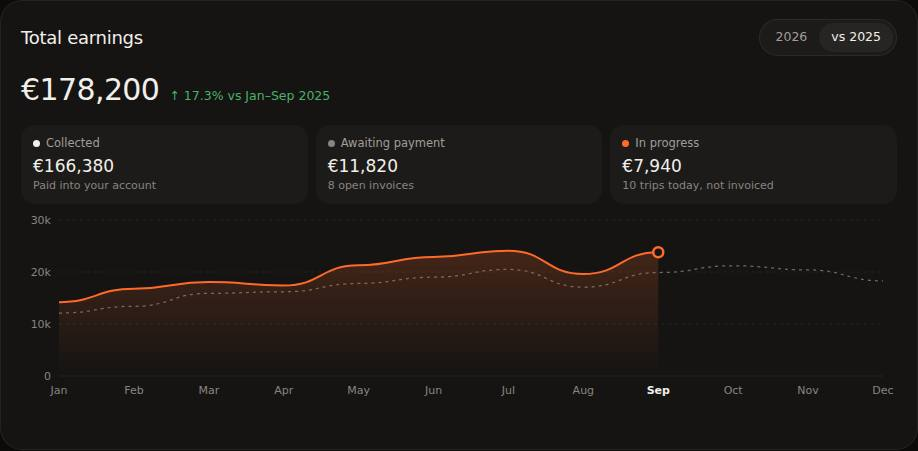
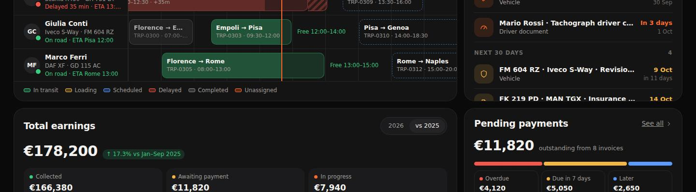
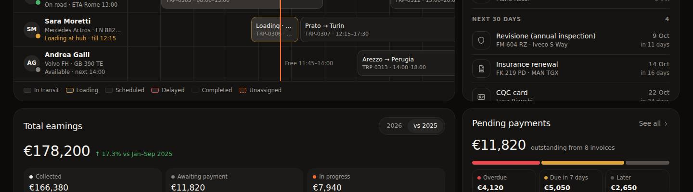

<title>Fleeex Home Design Review</title>
<meta name="description" content="Design review of the Fleeex home dashboard prototype: what read as AI-generated, what was fixed, and what is still open.">
<link rel="preconnect" href="https://fonts.googleapis.com">
<link rel="preconnect" href="https://fonts.gstatic.com" crossorigin>
<link rel="stylesheet" href="https://fonts.googleapis.com/css2?family=Inter:wght@400;500;600&family=JetBrains+Mono:wght@400;500&display=swap">
<style>
:root{
  --bg:#F6F4F1;--surface:#FFFFFF;--line:#E4E0DA;--text:#1B1917;--muted:#6B655F;--faint:#8F8983;
  --accent:#D9531A;--red:#C9373C;--amber:#A86F10;--green:#2F7D45;--code:#EFEBE6;
}
@media (prefers-color-scheme:dark){:root:not([data-theme="light"]){color-scheme:dark;
  --bg:#0C0B0A;--surface:#151413;--line:#2A2724;--text:#F2EFEB;--muted:#A29D97;--faint:#8A847E;
  --accent:#FF7A3D;--red:#F0666A;--amber:#E0A23A;--green:#5BBF78;--code:#1F1D1B}}
:root[data-theme="dark"]{color-scheme:dark;
  --bg:#0C0B0A;--surface:#151413;--line:#2A2724;--text:#F2EFEB;--muted:#A29D97;--faint:#8A847E;
  --accent:#FF7A3D;--red:#F0666A;--amber:#E0A23A;--green:#5BBF78;--code:#1F1D1B}
*{box-sizing:border-box}
body{background:var(--bg);color:var(--text);font:15px/1.6 Inter,system-ui,-apple-system,"Segoe UI",sans-serif;padding-inline:16px;-webkit-font-smoothing:antialiased}
main{max-width:1080px;margin:0 auto;padding-block:48px 72px}
h1{font-size:clamp(30px,4vw,42px);font-weight:500;letter-spacing:-.03em;line-height:1.1;margin:0 0 12px;text-wrap:balance}
h2{font-size:22px;font-weight:500;letter-spacing:-.02em;margin:56px 0 6px;text-wrap:balance}
h3{font-size:16px;font-weight:600;margin:0 0 4px}
p{margin:0 0 12px;max-width:68ch}
.lede{color:var(--muted);font-size:17px;max-width:62ch}
.eyebrow{font-size:12px;text-transform:uppercase;letter-spacing:.08em;color:var(--faint);font-weight:600;margin-bottom:10px}
a{color:var(--accent)}
code{font:13px "JetBrains Mono",ui-monospace,monospace;background:var(--code);padding:1px 5px;border-radius:5px}
.summary{display:grid;grid-template-columns:repeat(auto-fit,minmax(200px,1fr));gap:12px;margin:28px 0 8px}
.summary div{background:var(--surface);border:1px solid var(--line);border-radius:14px;padding:14px 16px}
.summary b{display:block;font-size:26px;font-weight:500;font-variant-numeric:tabular-nums;letter-spacing:-.02em}
.summary span{color:var(--muted);font-size:13px}
.issues{list-style:none;padding:0;margin:18px 0 0;display:grid;gap:10px}
.issue{background:var(--surface);border:1px solid var(--line);border-radius:14px;padding:16px 18px;display:grid;grid-template-columns:auto 1fr;gap:4px 16px}
.sev{grid-row:span 3;font-size:12px;font-weight:600;padding:2px 8px;border-radius:999px;border:1px solid var(--line);height:fit-content;white-space:nowrap;display:inline-flex;align-items:center;gap:6px}
.sev::before{content:"";width:6px;height:6px;border-radius:50%;background:var(--c)}
.sev.high{--c:var(--red)}.sev.med{--c:var(--amber)}.sev.low{--c:var(--faint)}
.issue p{margin:0;color:var(--muted);font-size:14px}
.issue .fix{color:var(--text)}
.issue .fix::before{content:"Fix: ";font-weight:600}
.issue .open::before{content:"Next step: ";font-weight:600}
.cmp{display:grid;grid-template-columns:1fr 1fr;gap:12px;margin:16px 0 8px}
.cmp figure{margin:0}
.cmp img{width:100%;height:auto;display:block;border-radius:12px;border:1px solid var(--line);background:#111}
.cmp figcaption{font-size:12px;color:var(--faint);margin-top:6px;text-transform:uppercase;letter-spacing:.07em;font-weight:600}
.tbl-wrap{overflow-x:auto;margin-top:14px}
table{border-collapse:collapse;width:100%;min-width:620px;font-size:14px}
th,td{text-align:left;padding:10px 12px;border-bottom:1px solid var(--line);vertical-align:top}
th{font-size:12px;color:var(--faint);font-weight:600;text-transform:uppercase;letter-spacing:.06em}
td.num{font-variant-numeric:tabular-nums}
.sw{display:inline-block;width:14px;height:14px;border-radius:4px;vertical-align:-2px;margin-right:8px;border:1px solid rgba(128,128,128,.35)}
.refs{display:grid;grid-template-columns:repeat(auto-fit,minmax(240px,1fr));gap:10px;margin-top:14px}
.refs a{display:block;background:var(--surface);border:1px solid var(--line);border-radius:14px;padding:14px 16px;text-decoration:none;color:var(--text)}
.refs a:hover{border-color:var(--accent)}
.refs b{font-weight:600}
.refs span{display:block;color:var(--muted);font-size:13px;margin-top:2px}
.foot{margin-top:56px;color:var(--faint);font-size:13px}
@media(max-width:700px){.cmp{grid-template-columns:1fr}.issue{grid-template-columns:1fr}.sev{grid-row:auto;justify-self:start}}
</style>

<main>
  <div class="eyebrow">Design review · Fleeex CRM · Home page v1 → v2</div>
  <h1>Why the first prototype looked generated, and what changed</h1>
  <p class="lede">The v1 home page covered everything the client asked for, but its styling fell into common AI-dashboard habits. Too many colors were competing, every icon sat on a tinted tile, every status was a filled pill, and the hero used an orange glow. This review lists each problem, compares v1 and v2, and ends with the issues still open.</p>

  <div class="summary">
    <div><b>18</b><span>problems found</span></div>
    <div><b>14</b><span>fixed in v2</span></div>
    <div><b>4</b><span>still open, need a decision</span></div>
    <div><b>6 → 1</b><span>hues in use → one accent, plus red and amber for exceptions</span></div>
  </div>

  <h2>The rule v2 follows</h2>
  <p>Every reference below uses the same approach: a warm grey ramp for almost everything, one brand color, and semantic color only when something needs attention. In v2, normal operations are grey. A color appears only when someone has to act:</p>
  <div class="tbl-wrap"><table>
    <thead><tr><th>Color</th><th>Means</th><th>Used for</th></tr></thead>
    <tbody>
      <tr><td><span class="sw" style="background:#FF6A2B"></span>Orange <code>#FF6A2B</code></td><td>You act here</td><td>Primary button, "now" line, unassigned trips, selected size, earnings line</td></tr>
      <tr><td><span class="sw" style="background:#E5484D"></span>Red <code>#E5484D</code></td><td>Something is wrong</td><td>Delayed trip, overdue payment, expired document, blocked driver</td></tr>
      <tr><td><span class="sw" style="background:#E0A23A"></span>Amber <code>#E0A23A</code></td><td>Due soon or in progress at the hub</td><td>Loading, due within 7 days</td></tr>
      <tr><td><span class="sw" style="background:#4CAF6A"></span>Green <code>#4CAF6A</code></td><td>Live</td><td>A 6px dot only: driver on the road, trip in transit, positive trend</td></tr>
      <tr><td><span class="sw" style="background:#151413"></span>Warm greys <code>#0C0B0A → #F2EFEB</code></td><td>Normal</td><td>Scheduled, completed, available, all surfaces and text</td></tr>
    </tbody>
  </table></div>

  <h2>Before and after</h2>
  <h3 style="margin-top:20px">Planner</h3>
  <div class="cmp">
    <figure><figcaption>v1</figcaption></figure>
    <figure><figcaption>v2</figcaption></figure>
  </div>
  <p>The only colors left in the timeline are the delay, the loading bay and the orange "now" line.</p>

  <h3 style="margin-top:28px">Deadlines</h3>
  <div class="cmp">
    <figure><figcaption>v1</figcaption></figure>
    <figure><figcaption>v2</figcaption></figure>
  </div>

  <h3 style="margin-top:28px">Pending payments and earnings</h3>
  <div class="cmp">
    <figure><figcaption>v1</figcaption></figure>
    <figure><figcaption>v2</figcaption></figure>
  </div>
  <div class="cmp">
    <figure><figcaption>v1</figcaption></figure>
    <figure><figcaption>v2</figcaption></figure>
  </div>

  <h3 style="margin-top:28px">Hero</h3>
  <div class="cmp">
    <figure><figcaption>v1</figcaption></figure>
    <figure><figcaption>v2</figcaption></figure>
  </div>

  <h2>Problems found</h2>
  <p>Sorted by how much each one hurt the page.</p>

  <h3 style="margin-top:24px">Color</h3>
  <ul class="issues">
    <li class="issue"><span class="sev high">High</span><h3>Six hues were competing on one screen</h3><p>Green, amber, blue, red, orange and purple all appeared together, so color no longer said anything. "In transit" (normal) was as loud as "Delayed" (a problem).</p><p class="fix">Normal states are grey now. Red, amber and orange are kept for states that need action, following Supabase and Canny.</p></li>
    <li class="issue"><span class="sev high">High</span><h3>Tinted icon tiles on KPIs and deadlines</h3><p>Colored icons on 14%-tinted squares are the most recognisable pattern of generated dashboards. They add color without adding meaning.</p><p class="fix">Outlined neutral boxes. The icon turns red or amber only when that item is overdue or due soon, like Supabase's status tiles.</p></li>
    <li class="issue"><span class="sev high">High</span><h3>Saturated planner blocks</h3><p>Green and red filled bars with dashed blue outlines made the timeline the loudest thing on the page. It was also hard to spot the one delayed trip.</p><p class="fix">Neutral blocks with a subtle progress fill. Only the delayed trip has a red border and striped overrun, and only loading has amber.</p></li>
    <li class="issue"><span class="sev med">Medium</span><h3>Filled status pills on every row</h3><p>Every row carried a colored pill, which adds noise in the trips table and payment list.</p><p class="fix">Outlined pill with a 6px status dot and normal text color, the same treatment as Mintlify's "Live" badge.</p></li>
    <li class="issue"><span class="sev med">Medium</span><h3>Orange light trails and a drawn truck in the hero</h3><p>Near-black with an orange neon glow is a common AI look. The truck made of parallelograms looked fake next to the approved photographic hero.</p><p class="fix">Removed. The hero is now a calm warm gradient with a slot for the approved truck photo.</p></li>
    <li class="issue"><span class="sev med">Medium</span><h3>Cool greys under a warm brand color</h3><p>Neutral greys fought the orange.</p><p class="fix">The whole grey ramp is shifted slightly toward the brand hue (<code>#151413</code>, <code>#A29D97</code>).</p></li>
    <li class="issue"><span class="sev low">Low</span><h3>Rainbow dots on fuel prices and earnings</h3><p>Four fuel types had four colors that meant nothing.</p><p class="fix">Dots removed from fuel prices. Earnings keeps one orange marker, for money in progress.</p></li>
    <li class="issue"><span class="sev low">Low</span><h3>Heavy chart gradient</h3><p>A 45% orange area fill pulled attention away from the planner.</p><p class="fix">20% fill and a thinner line. The 2025 comparison is a light dotted grey.</p></li>
  </ul>

  <h3 style="margin-top:32px">Typography, layout and accessibility</h3>
  <ul class="issues">
    <li class="issue"><span class="sev high">High</span><h3>Planner subtitle collapsed into a one-word column</h3><p>At 1440px, the filters, date controls and view switch squeezed "9 drivers · 2 trips waiting for a driver" to one word per line.</p><p class="fix">The header is split into two rows. Row one has the title, date and Open planner link. Row two has the filters and the Day/Week switch.</p></li>
    <li class="issue"><span class="sev high">High</span><h3>Small grey text failed contrast</h3><p><code>#6E6964</code> on the card surface measured 3.4:1, below the WCAG AA minimum of 4.5:1. It was used for column headers, captions and free-slot notes.</p><p class="fix">Raised to <code>#8A847E</code>, which measures 5.0:1.</p></li>
    <li class="issue"><span class="sev med">Medium</span><h3>Everything was semibold</h3><p>With titles, numbers, rows and chips all at weight 600, there was no hierarchy. The approved design uses regular and medium weights.</p><p class="fix">Card titles, big figures and row titles use 500, and the hero title is 500 on two lines.</p></li>
    <li class="issue"><span class="sev med">Medium</span><h3>Deadline titles were cut off</h3><p>"GF 482 KL · Volvo FH16 · Service · 120,0…" hid the most important part.</p><p class="fix">The title says what is due ("Service · 120,000 km") and the subtitle says who or which vehicle.</p></li>
    <li class="issue"><span class="sev low">Low</span><h3>Planner showed only 4 of 9 drivers</h3><p class="fix">The card is taller (620px), so 6 drivers show before scrolling.</p></li>
    <li class="issue"><span class="sev low">Low</span><h3>Stray underlines on "View all" links</h3><p class="fix">Removed. Links are muted text with a chevron.</p></li>
  </ul>

  <h3 style="margin-top:32px">Still open</h3>
  <ul class="issues">
    <li class="issue"><span class="sev med">Open</span><h3>Hero needs the real photo</h3><p>Artifacts can't load external images, so the prototype uses a gradient.</p><p class="open">Set <code>.hero{--hero-photo:url(truck.jpg)}</code> with the approved image.</p></li>
    <li class="issue"><span class="sev med">Open</span><h3>Planner on phones</h3><p>On a phone the timeline scrolls sideways, which is hard to use on the road.</p><p class="open">Design a stacked agenda view for mobile: one card per driver with their current and next trip.</p></li>
    <li class="issue"><span class="sev low">Open</span><h3>"Now" time label is hidden</h3><p>The sticky hour header covers the 11:40 tag at the top of the now-line. Only the bold "11:00" hour shows.</p><p class="open">Move the time tag into the header row.</p></li>
    <li class="issue"><span class="sev low">Open</span><h3>Confirm the typeface</h3><p>The prototype uses Inter because the approved design appears to use Inter or SF Pro.</p><p class="open">Check the font in the Figma file and swap it if it's different.</p></li>
  </ul>

  <h2>Mobbin references used</h2>
  <div class="refs">
    <a href="https://mobbin.com/screens/782baf2b-1d87-4a1c-a461-a87acc585ba9"><b>Supabase</b><span>Outlined neutral icon boxes, green used only for healthy</span></a>
    <a href="https://mobbin.com/screens/0a7f7ff1-b20e-4422-8999-f782a2f50ab3"><b>Canny</b><span>Grey-only dark dashboard, hierarchy from weight and size</span></a>
    <a href="https://mobbin.com/screens/e892500e-f820-4e3e-af83-973bf50ed22e"><b>Plain</b><span>One accent for all chart data</span></a>
    <a href="https://mobbin.com/screens/3df83a54-1f2b-4faa-b6c4-c577f27bd5a3"><b>Mintlify</b><span>Outlined status badge with a small dot</span></a>
    <a href="https://mobbin.com/screens/c2e1c5aa-eab9-4bc9-9b3e-c8ed15aa96dd"><b>Sweatpals schedule</b><span>Dark timeline with one accent "now" marker</span></a>
    <a href="https://mobbin.com/screens/a7891048-191b-4b29-8700-34f80007aa44"><b>Shopify analytics</b><span>Edit mode with drag, hide and reset</span></a>
  </div>

  <p class="foot">Screenshots taken at 1440px wide. The fallback system font appears in the screenshots because the capture had no web-font access. The live prototype loads Inter.</p>
</main>
